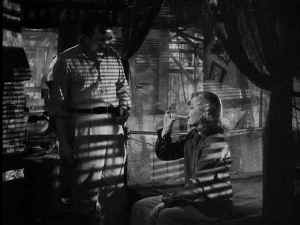

|
Only Angels Have Wings/A,B+ |
|
Columbia/1939/121m/FS 1.33 |
One of the great films of 1939 makes its DVD debut in a exquisite transfer from
Columbia-Tristar. The lustrous black and white images are transferred with the snap, there are few scratches and scant evidence of dirt. There
must have been some diligent digital clean-up done to the master for this DVD, but it certainly has
not dimmed the luster from the presentation. Focus is consistently on target, and the subtleties of
light are meticulously maintained. The mono sound is clean, no hiss disturbs the details of the
jungle or the drone of the airplanes.
Only Angels Have Wings creates a small, cozy, easy to understand world. The story of a small mail carrying airline trying to
survive in the South American jungle takes place in a space carved out of the surrounding tropical
forest. The town consists of a few flimsy buildings with a cantina as the center of this world.
Director Howard Hawks knows that much of his mise-en-scene is static, so right at the outset there’s
a musical set piece to stimulate the juices. A cavalier spirit is established as local fliers
follow a good looking blonde touring the night streets during a banana boat stopover. Bonnie Lee is
the wayward blonde, a singer heading back to the States who happens upon these brave men in
the isolated jungle. Something about the men keeps her from boarding the boat to leave.
 |
|
Mine's bigger than yours!. ©Columbia |
While the flights must get through to
preserve the airline, even under the toughest weather conditions, the atmosphere ignites sparks
between the characters, and Only Angels Have Wings is about character first. Hawks looks at these characters
under the greatest pressure when they have to make life and death choices as casually as saying
"I'll go out for the papers." The strengths and weaknesses of the characters show up
under the director's microscope and the trip to the jungle is emotionally rewarding. Hawks
overcomes aspects of the artificial sets with a strong command of character.
Hawks is a no-nonsense director who does not sacrifice story to character,
but uses character to move the story at a swift pace. Only Angels Have Wings never loses
speed from it's opening moments. Like the dialog, like the bravado of the character, Hawks' sure,
clean direction is a pleasure to experience. Hawk gets such great performances from his
actors; perhaps the secret's in the casting.
The lead actors are nothing short of wonderful. Cary Grant plays airline boss Geoff Carter with an gun-metal
toughness on the outside, while holding his emotions in control with a rough masculine
veneer. Jean Arthur is all charm as Bonnie Lee, the girl that lands smack dap in
the middle of these life hungry flyers. Thomas Mitchell, one of the great third wheel actors, has
easy chemistry with Arthur, as demonstrated from their wonderful work together in Mr. Smith Goes
to Washington. Even Rita Hayworth has a chance to steam some sex into the flick with her role
as former Carter flame Judy McPherson, now married to tainted flyer Bat McPherson.
The look of the film is pure chiaroscuro. Joseph Walker's photography captures the mood and ambiance of the Hawks world. You can
even feel the tropical heat through the Walker's lens. Hawks and Walker work so well together that what should be hokey airplane flight
scenes look great. The tension that develops is beyond what's photographed. Hawks collaborated with
Jules Furthman on the script. Furthman, a veteran with a fine record of films such as Mutiny on
the Bounty and Come and Get It, marries well with the Hawks style.
The heart of Only Angels Have Wings is the characters. The men are tough on the outside but hidden below the surface,
caught in glimpses of the camera, is a softer, more feminine side. The women have a world-weariness
about them, but the sparkle is not drained. They have ocean's of reserve. Hawks, famous for the sharp, snappy dialog between characters, gives Grant
and Arthur the goods to ply their magic. Grants wise-cracks are only topped by Arthur's. It's
remarkable how natural the dialog seems from these well drawn characters. These are characters that will stay
with you for years after watching the movie. Don't miss this terrific gem from one of the greatest
of all Hollywood years.
The Feature Archive has articles ranging from Akira Kurosawa to Blonde Bimbos, The Heistmasters and Frank Darabont.
Watching Movies or Watching Video

Don't lose site of why you fell in love with the movies. Click on the image to read more.
Check out the Movie Poster Archive for short bios and images of Susan Hayward, Kirk Douglas, Katharine Hepburn and many more. This month's featured star is Cary Grant.

Imaging Science Foundation promotes proper standards in home theater viewing.
ISF trained technicians offer monitor calibration services to consumers. The difference in a
properly calibrated monitor can be astounding. Click on the image to find an ISF member near you.
HOT LINKS
DVD Verdict
They may be judgmental, but that's the
point, isn't it. Lots of DVD reviews plus news and more.
Click on the link to visit the judge's chambers.

More than just talk, one of the friendly and helpful places on the web where home theater views
are exchanged. You might find a laugh or two as well.
National Preservation Film Board
Learn about what this organization is doing to preserve our film heritage. Want to know the
guidelines for proper handling of film? This is the place.
Home Theater
Reference Reviewing System
When you read a DVD review it's of utmost importance to know what equipment is being used to
evaluate quality. Click on the projectors to find out more.